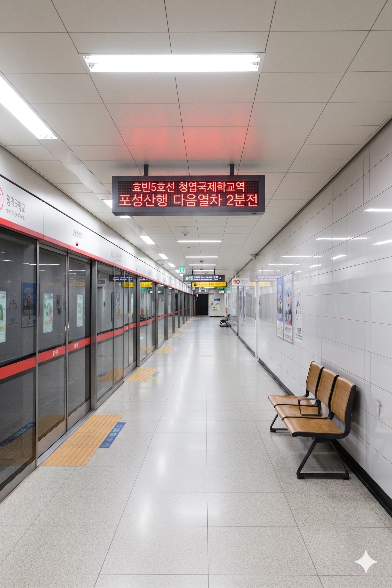

효빈 도시철도 5호선 511번. 추후 2034년에 효빈 도시철도 청엽선이 개통되면 환승역이자 청엽선의 종착역이 될 예정이다. 효빈광역시 청엽구 청엽동 435 소재.
인근에 위치한 청엽국제학교에서 역명이 유래되었다. 청엽구 내에서도 가장 부유한 동네를 관통하며, 외국인 주재원과 고소득층이 거주하는 고급 빌라촌의 관문 역할을 한다.
2034년 청엽선이 개통하면 청엽선의 종점이 된다. 5호선 대합실이 지하 1층, 승강장이 지하 2층에 있는데 반해, 청엽선은 지상 2층의 고가역사로 지어질 예정이라 필연적인 막장환승이 예고되어 있다. 비싼 땅값 덕분에 환승 통로를 넓게 못 지어서 에스컬레이터만 무한정 타고 올라가야 할 판이다.
역 1번 출구 주변은 이국적인 간판과 다양한 인종이 섞여 있는 풍경을 볼 수 있다. 사실상 '청엽구의 강남'이라 불리는 노른자 땅이다.
|
5
청엽국제학교역 출구 정보
|
||
|---|---|---|
| 번호 | 주요 시설 및 방향 | 비고 |
| 1 | 청엽아트아파트, 서릉초등학교 | 고급 베이커리 밀집 지역 |
| 2 | 청엽4동 행정복지센터 | |
| 3 | 안곡초등학교 | |
| 4 | 청엽국제학교 | 통학 시간대 혼잡 |
| 5 | 덕현6동 행정복지센터, 매남초, 사덕초, 산군초, 모산중, 덕현여고 | |
| 청엽국제학교역 이용객 통계 | ||
|---|---|---|
| 연도 | 일평균 이용객 | 비고 |
| 2020년 | 6,534명 | |
| 2021년 | 7,675명 | |
| 2022년 | 8,851명 | |
| 2023년 | 8,999명 | |
| 2024년 | 9,382명 | |

| 동덕현 ↑ | ||||
| 하 | ㅣ | ㅣ | 상 | |
| ↓ 남우택 | ||||
| 상 | 5 효빈 도시철도 5호선 | 청덕공원 방면 |
| 하 | 5 효빈 도시철도 5호선 | 당역 종착 (포성산 방면 운행 준비 중) |
| ㅣ | ㅣ | |||
|
|
||
|
|
| 버스 연계 교통 | ||
|---|---|---|
| 구분 | 정류소명 | 노선 번호 |
| 순방향 | 청엽국제학교 | 14, 47, 88, 89, 141, 471, 472, 481, 793, 881, 891, 892, 1111, A03 |
| 역방향 | 청엽국제학교(건너편) | 41, 74, 88-1, 98, 411, 741, 742, 841, 793, 881, 891, 892, 1111R, A03R |